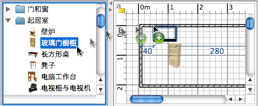

| 添加门、窗与物件 | |||
如果您要向家居模型中添加门、窗或物件，请在物件目录中选择一个或多个物件，并将其拖曳到平面图或物件列表中。  您也可以先在物件目录中选中需要的物件，然后选择物件→加入家居模型或者单击“加入家居模型”工具。
如果您将物件拖曳至物件列表，或使用物件→加入家居模型进行添加，那么这些物件的左上角都会被定位在 (0, 0) 点上。 添加到家居模型中的物件会在物件列表、平面图和 3D 视图中同步显示和选中。当程序正在加载加入的 3D 物件模型时，这些物件会在 3D 视图中显示为白色的长方体。 |
|